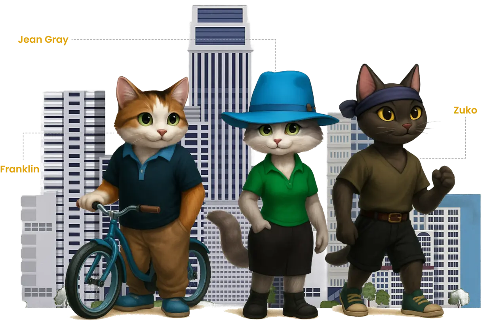

BubacatCity WordPress Site Build
Published on November 28, 2025
Imagine this: ancient Egyptian cats riding bicycles, stealing artifacts, and racing to become the supreme ruler of Bubastis. That’s Bubacat – a super fun, family-friendly adventure card game that needed website redesign as vibrant and engaging as their game. Here’s how I brought their digital world to life.
The Goal
- Capture the game’s cheeky Egyptian-cat vibe
- Make it instantly understandable in <10 seconds
- Load blazingly fast (card game buyers are impatient!)
- Prepare clean WooCommerce foundation for the deck + T-shirts, hats, etc.
- Mobile‑first layouts, because most visitors come from social links on phones.
- Space for blog posts, character profiles, a gallery, and a future shop.
Design Setup
- Selected light theme with custom colors from the game palette
- Defined typography using one main font and one accent font
- Set global colors in Elementor to keep every page consistent

- Breakpoints used: 767px for mobile, 1230px for tablet and desktop

- Content widths: 420px for mobile, 800px for tablets

Hero Section
Added game themed hero art, title, intro text, and a simple button. Adjusted margins, paddings, and font size per device to keep the section readable on small screens.

About and Characters
Built two sections with clear structure. About block shows story text. Characters use card layout with equal spacing and images optimized for speed.
Gameplay Section
Added a short explanation block with icons. Used consistent padding across devices to match the game style.
Blog and Gallery
Blog uses standard WordPress posts with custom template. Gallery grid built in Elementor and tested for mobile readability.
Shop Structure
Prepared space for future WooCommerce items. Set up clean product card style based on the site colors and icon set.
WordPress Setup
- Used lightweight parent theme
- Installed Elementor, SEO plugin, cache plugin
- Created custom post types for characters and gallery
Performance
- Compressed images to WebP format
- Enabled lazy loading
- Reduced DOM size by splitting long layouts into sections
SEO Setup
- Added clean alt tags and titles
- Created internal links between story, characters, and gameplay
- Generated sitemap and connected site to Search Console
Final Result

BubacatCity uses fast layouts, compressed images, and simple Elementor sections. The design stays consistent across all devices and supports the game look of the project.
NoCap E-Commerce Project

Football Academy site example

Japalandia work abroad Landing Page